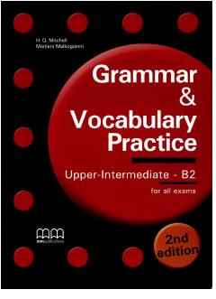

GAB2 darajasidagi ingliz tili grammatikasi va leksikasini o'rganish uchun qo'llanma.
Ushbu qo'llanma B2 darajasidagi o'quvchilar uchun ingliz tili grammatikasi va leksikasini chuqur o'rganishga mo'ljallangan. Kitob Cambridge FCE va Michigan ECCE imtihonlariga tayyorgarlik ko'rish uchun mo'ljallangan bo'lib, turli mashqlar, frazeologik fe'llar va so'z boyligini oshiruvchi bo'limlarni o'z ichiga oladi.